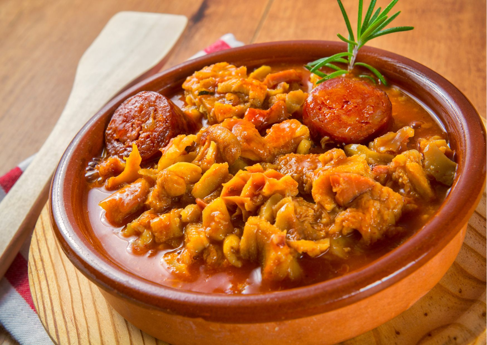

Dobradinha

Descrição:
Dobradinha é o nome dado, em culinária, ao bucho de animais, em especial do boi, cozido em pequenos pedaços com grande variedade de condimentos e acompanhamentos. É prato tradicional da cozinha do norte de Portugal e de diversas regiões do Brasil, tendo sido tema de célebre poema de Fernando Pessoa, Dobrada à moda do Porto. Acredita-se que o prato chegou ao Brasil pelos portugueses, sendo incorporado na culinária de diversas localidades brasileiras. Há variações que levam toucinho de porco e linguiças.
Ingredientes:
- 1 kg de bucho de boi
- 1/2 cebola
- 4 cravinhos da índia
- 1 tomate
- 1 ramo de salsa
- Sal
- Pimenta-do-reino (opcional)
- Colorau (opcional)
Modo de preparo:
- Primeiramente corte o bucho em tirinhas do tamanho que desejar.
- Coloque numa panela com água e com os cravos-da-índia e deixe ferver para sair o mal cheiro do bucho.
- Depois de ferver por mais ou menos 30 minutos, escorra água e reserve.
- Pegue o bacon, a linguiça e frite separadamente.
- Depois pegue uma panela de pressão, refogue a cebola, coloque o tomate, a salsa picadinha, pimenta-do-reino e outros temperos de sua preferência.
- Coloque uma pitada de sal, e logo coloque o bucho dentro e deixe cozinhar por mais ou menos 40 minutos.
- Abra a panela e verifique se está duro, se estiver volte a cozinhar até que amoleça e pode servir com um arroz quentinho e com uma farofinha de alho.